京张智环 JAL · 百年京张AI创新带城市设计概念建议
总览地图
总体空间结构为一轨、三核、两翼、五驿。设计命题:京张铁路把山连成了路,京张智环把创新连成了环。五链(策源—开源—转化—验证—传播)沿绿脊组织为产业生态回路,而不是一组孤立园区。
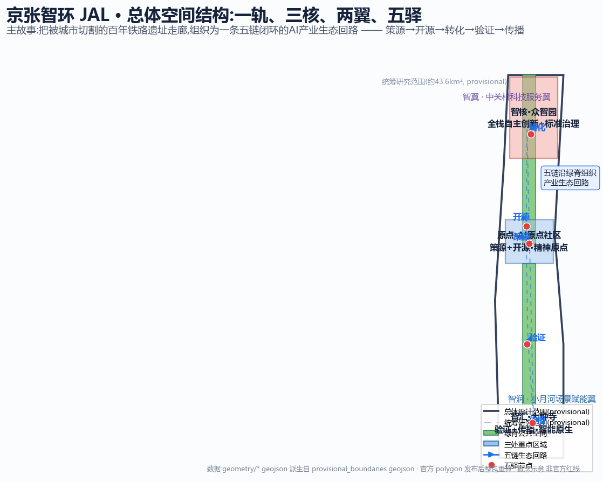
设计意向
以下为设计意向表达(AI 生成示意,仅表达空间氛围与设计方向,不代表最终建成效果,不作数据依据)。


三层范围与重点区域
统筹研究范围约 43.6 km²(产业生态判断)→ 总体设计范围约 11.4 km²(控规深度结构图层)→ 重点区域范围约 368.4 公顷(三处片区详细设计)。三处重点区均落图,数量 3 处。
| 重点区域 | 现状问题 | 设计动作 | 五链环节 |
|---|---|---|---|
| 众智园AI自主创新加速区 | 园区"背对"清河,界面封闭 | 清河低碳创新廊、零号驿、东西缝合 | 转化 |
| 北京AI原点社区 | 思想缺乏可落脚的公共界面 | 原点发布场、成果转化廊、三重慢行缝合 | 策源+开源 |
| 大钟寺AI产业聚集区 | 站点客流"过而不留" | 钟摆厅、四象限步行连通、数据会客厅 | 验证+传播 |
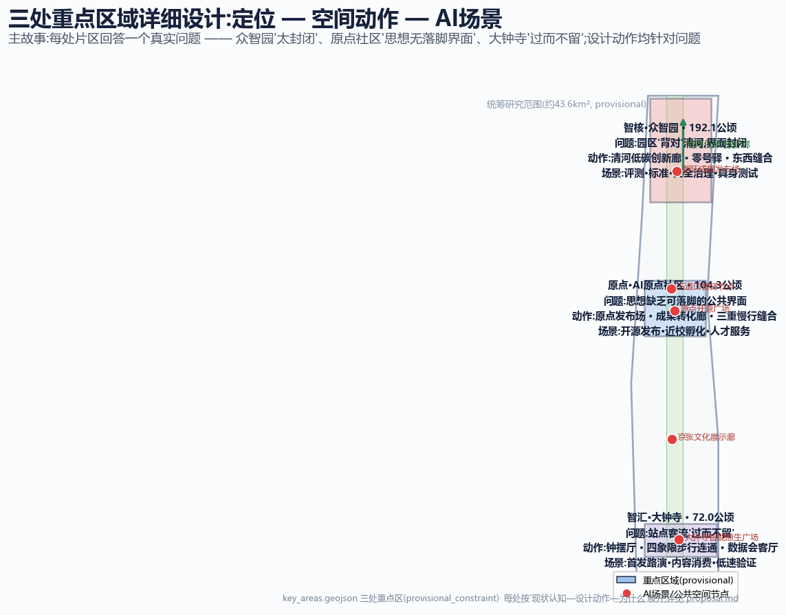
用地分区与建筑
用地按 MNR 用地用海分类组织,共 10 个用地图元,完整覆盖提交边界、无缝无叠;科研用地约 343.59 万 m²、商业服务业约 120.88 万 m²、居住约 170.81 万 m²、公园绿地约 221.94 万 m²。建筑基底为示意性建议,不代表现状或审批建筑。
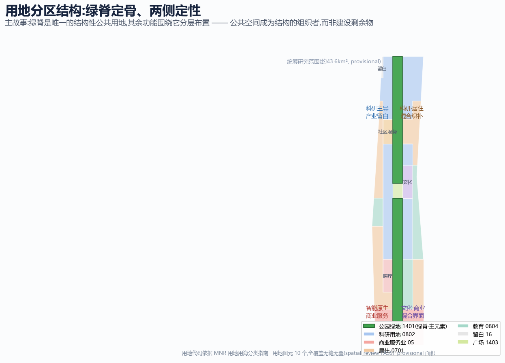
分区深化设计
将用地细化为 27 个可独立深化的区块,每个区块有独立定位、主导功能与设计动作(数据见 geometry/zones_summary.json),构成「智汇核—缝合带—智联段—原点核—智创核—一轨绿脊」六组结构。
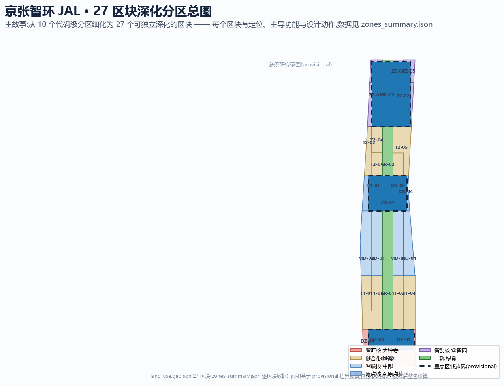
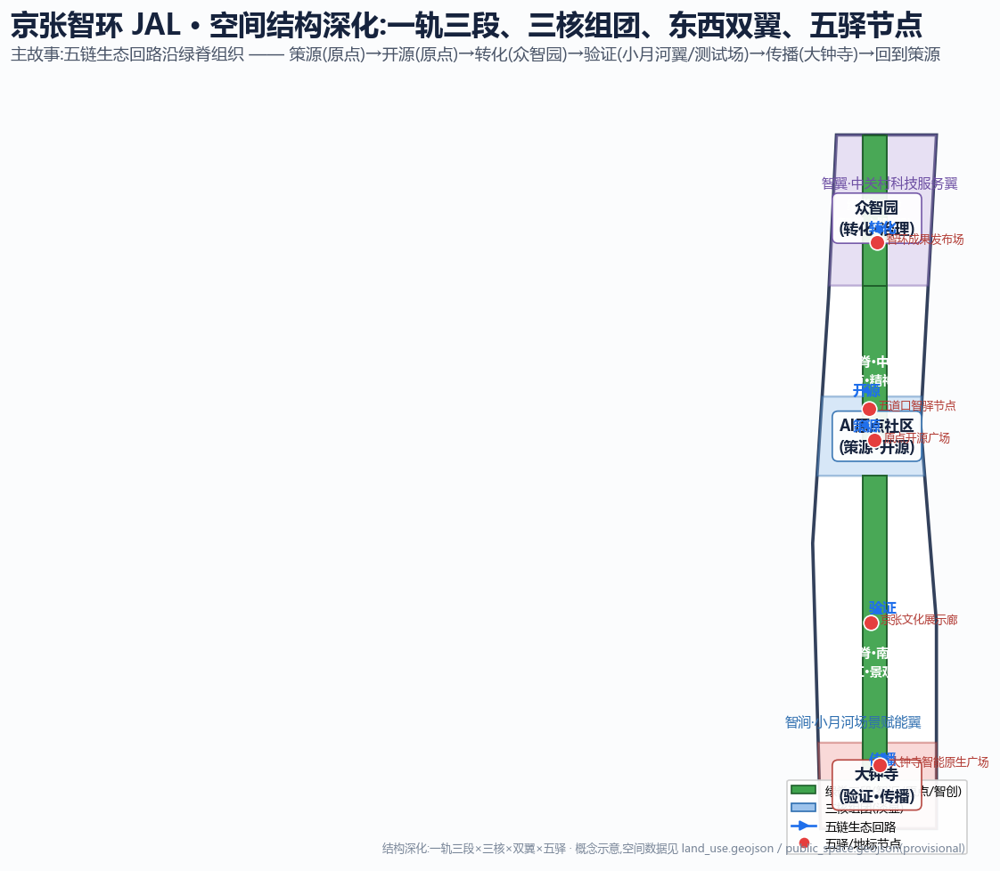
六组结构分区(复算面积)
| 结构组 | 区块数 | 面积(m²) | 代表区块 |
|---|---|---|---|
| 智汇核·大钟寺 | 4 | 135.12 万 | 智能原生街区、钟摆厅前广场、数据会客厅、站城门户 |
| 缝合带·过渡 | 8 | 300.75 万 | 南北过渡宜居组团、社区医养、社区服务、科研社区 |
| 智联段·中部 | 4 | 204.60 万 | 科研转化带、教育带(东西翼) |
| 原点核·AI原点社区 | 4 | 107.00 万 | 近校转化廊、开源广场、文化驿站、教育文化街区 |
| 智创核·众智园 | 4 | 171.89 万 | 全栈自主创新区、开源协作谷、清河智创岸、门户留白 |
| 一轨·绿脊 | 3 | 221.94 万 | 南段(智汇)、中段(原点)、北段(智创) |
交通慢行与蓝绿公共空间
慢行网络以绿脊主轴为骨架,五条东西向步行连通缝合快速路切割,轨道接驳强化站城一体。蓝绿空间以京张遗址公园绿脊与清河、小月河蓝绿系统为骨架。
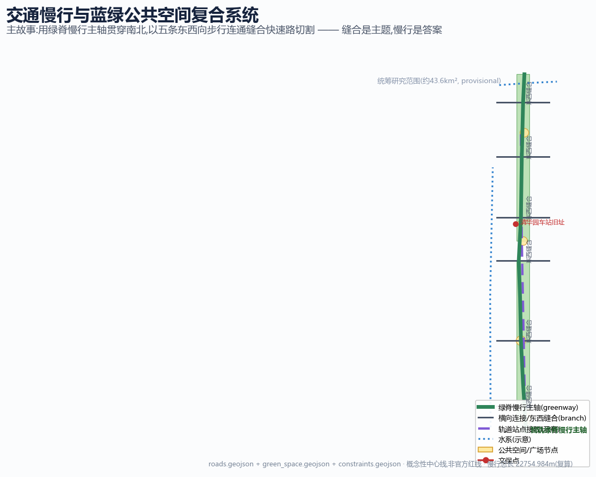
技术规定与断面
27 区块的建议 FAR 区间、高度分区、退让要点与绿地率按用地代码分类给出(数据见 visual/assets/technical_regulations.json)。重要声明:全部数值为概念建议,不是法定控制指标;官方控规条件取得后必须整包替换。
| 用地代码 | 代表区块 | 建议FAR | 高度分区 | 绿地率建议 |
|---|---|---|---|---|
| 05 商业服务业 | 智能原生街区、数据会客厅 | 2.5-4.5 | 高层 60-80m | ≥20% |
| 0802 科研 | 全栈自主创新区、转化廊 | 1.8-3.5 | 中高层 45-80m | ≥25% |
| 0701 居住 | 南北宜居组团 | 1.6-2.5 | 多层 24-45m | ≥30% |
| 0804 教育 | 教育带、教育文化街区 | 1.0-2.0 | 多层 24-45m | ≥30% |
| 1401 绿地 | 绿脊三段 | 禁建 | — | ≥90% |
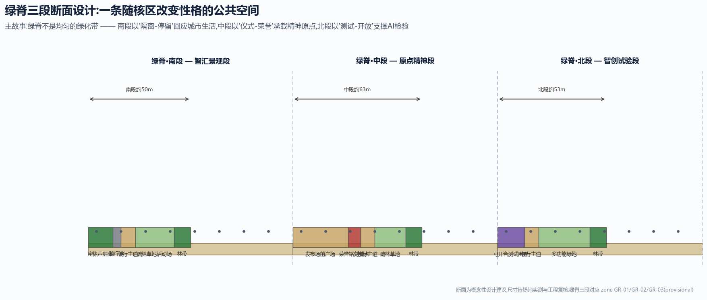
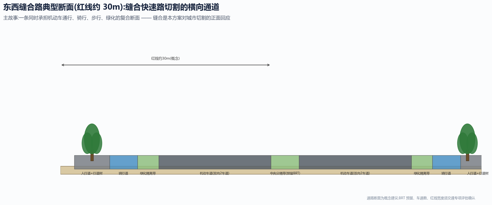
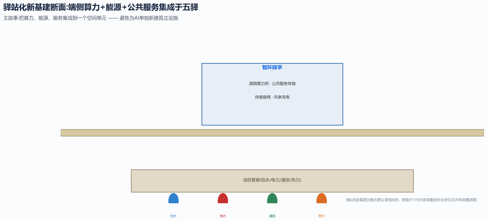
城市设计导则
27 区块逐块的体量角色、界面策略、材质谱系与设计气质(数据见 visual/assets/urban_design_guidelines.json)。体量沿绿脊递减、站点周边集中、文化资源让位风貌;材质谱系为「砖·钢·玻璃·木」,延续京张铁路工程美学。概念导则方向,非法定控制。
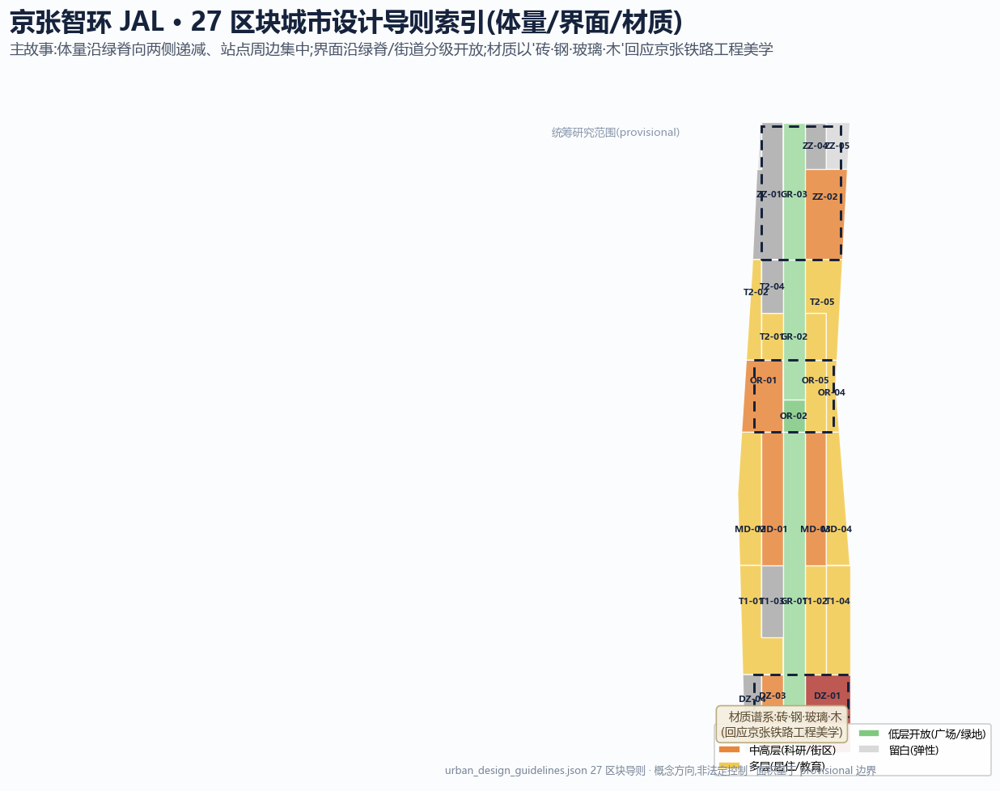
| 区块 | 体量角色 | 界面策略 | 材质·色彩 |
|---|---|---|---|
| DZ-01 智能原生街区 | 门户天际线标志 | 首层连续橱窗+灰空间檐廊 | 玻璃+浅色石材,银灰+信号朱 |
| OR-01 近校转化廊 | 中高层转化平台 | 校门口首层全开放服务 | 玻璃+石材,银灰+白 |
| ZZ-04 清河智创岸 | 滨水科研界面 | 临河退台+亲水慢行 | 玻璃+木+石材,银+原木+绿 |
| GR-02 绿脊中段 | 低层开放 | 发布场+荣誉铭刻 | 石材+金属+发光铺装 |
| ZZ-05 北五环门户 | 留白弹性 | 门户标识+绿地 | 生态地被+耐候钢 |
AI 场景与朝圣地标
配套 5 个 AI 场景节点、14 张场景卡、6 类用户画像、3 个产业测试验证场景与 3 处 AI 朝圣地标(原点发布场·零号驿·钟摆厅),构成「策源—检验—发布」叙事闭环。五驿计划荣誉体系以驿站为最小铭刻单元记录贡献。
产业测试验证场景(均为测试性质,非已批准运营)
- 具身智能与服务机器人公共空间测试场(众智园绿脊)
- 低速接驳与微循环验证场(大钟寺站四象限)
- 公共服务智能体评测沙盒(零号驿)
更新项目与分期实施
提出 12 个概念更新项目,分 3 期实施:一期门户启动(原点社区+大钟寺)、二期开放测试(众智园)、三期全线贯通。分期逻辑为「轻先重后、以运营带建设」。
全球AI创新活动体系(设想安排,非已确定事项)
- 智环开源周(年度,全线)· 原点马拉松(季度,黑客松)
- 智环对话(年度,AI治理国际论坛)· 场景开放日(月度)
- 五驿计划(持续,贡献者驻留与荣誉铭刻)
运营实施深化
实施组织建议「京张智环共建联盟」(政府+园区+高校+街道+企业);分期为门户启动(0-2年)→开放测试(2-4年)→全线贯通(4-6年);运营以五驿驿长制、场景开放五步闭环、开发者三层机制为细则。机制建议,非实施承诺。
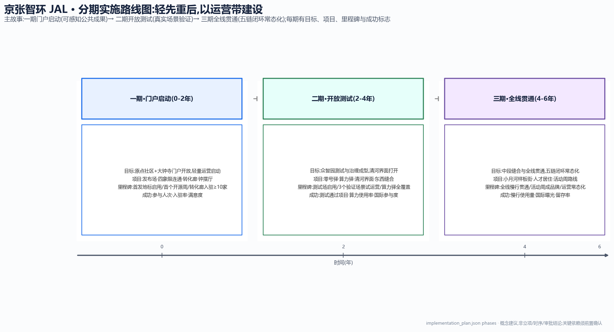
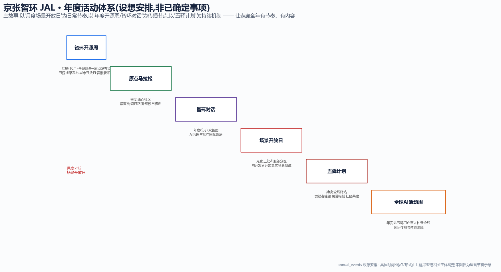
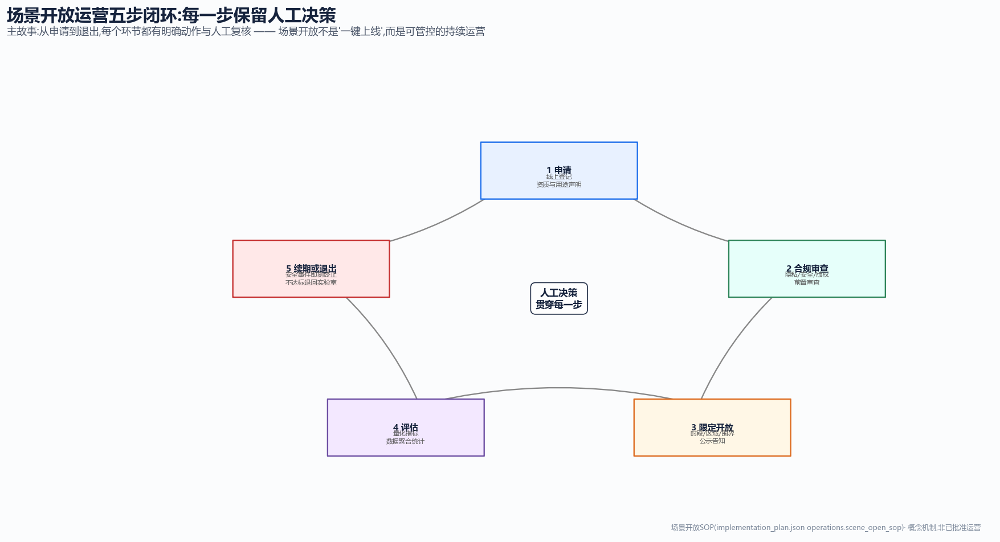
绩效指标(运营评估建议)
| 周期 | 代表性指标 | 目标 |
|---|---|---|
| 近期 | 开源周参与人次 · 转化廊入驻率 · 满意度 | ≥5000/届 · ≥60% · ≥80% |
| 中期 | 测试通过项目 · 算力驿使用率 · 国际参与 | ≥30个 · ≥50% · ≥20国 |
| 远期 | 慢行日均使用 · 活动周曝光 · 留存率 | ≥2万人次 · ≥100篇 · ≥70% |
核心指标
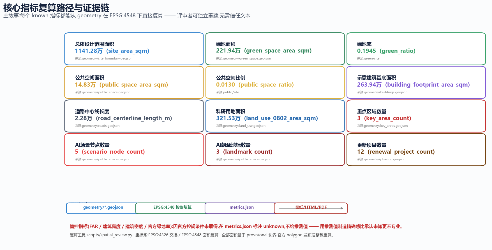
任务覆盖
| 任务 | 覆盖内容 | 状态 |
|---|---|---|
| agent.1 概念/命名/Logo | 京张智环 JAL 总体概念、三级命名体系、「环轨」Logo 方向、五链生态回路 | 已覆盖 |
| agent.2 生态案例 | 7 个全球 AI 创新生态案例机制借鉴、三区两翼协同回路 | 已覆盖 |
| agent.3 场景卡 | 14 张场景卡、6 类用户画像、3 个产业测试验证场景 | 已覆盖 |
| agent.4 公共空间/地标 | 原点发布场·零号驿·钟摆厅 3 处朝圣地标、五驿计划荣誉体系、组件库 | 已覆盖 |
| agent.5 文化叙事 | 京张铁路—中关村—AI 新文化三层时间叠合叙事、国际传播文案 | 已覆盖 |
| agent.6 活动运营 | 年度活动体系、开发者社区运营、场景开放五步闭环、招引转化路径 | 已覆盖 |
自检状态
| 检查项 | 状态 |
|---|---|
| 空间几何:land_use 全覆盖无缝隙、无重叠、要素均在 site 内 | PASS(scripts/spatial_review.py) |
| 指标复算:site_area/green_ratio/public_space_ratio 与几何一致 | PASS |
| 格式完整:必交文件齐全、PDF 非空、HTML 离线静态 | PASS(scripts/self_check_submission.py) |
| 专业证据:标准矩阵/深度矩阵/合规矩阵完整覆盖 | PASS |
| 边界可信度:provisional 边界已醒目标注,官方数据发布后整包重算 | 待官方 polygon |
来源
- 官方公告:百年京张AI创新带城市设计国际方案征集资格预审公告(北京市规划和自然资源委员会海淀分局,2026-05-09)
- 任务书:面向全球智能体开源征集任务书摘录(user-provided cleared)
- 产业背景:海淀「1+X+1」现代化产业体系(2026-03-02)、北京市「三区两翼」AI集聚地(2026-04-03)
- 空间数据:brief/site-package/geometry/provisional_boundaries.geojson(provisional_only)
- 专业标准:城市设计管理办法、控规编制审批办法、用地用海分类指南(本地快照)
- 全球案例:公开报道机制借鉴,不含投资额/产值/企业名单数据
假设
- 控规条件(容积率/高度/密度/退线)与道路红线、权属、市政管线须官方附件确认(A-CONTROLS-001)
- 本方案基于 provisional 边界生成,官方 polygon 发布后整包重算(A-BOUNDARY-001)
- 建筑基底为示意性表达,不代表现状或拆改留结论(A-BUILDING-001)
- 全球案例仅借鉴机制,事实须深化阶段核验(A-CASES-001)
- 全部 AI 场景为概念建议,非已批准运营(A-SCENARIO-001)